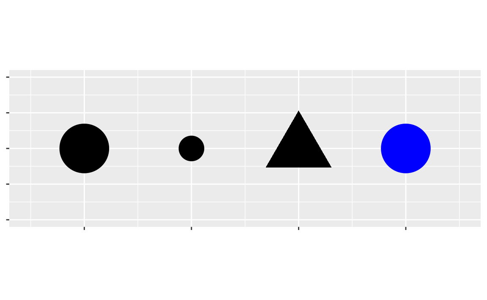
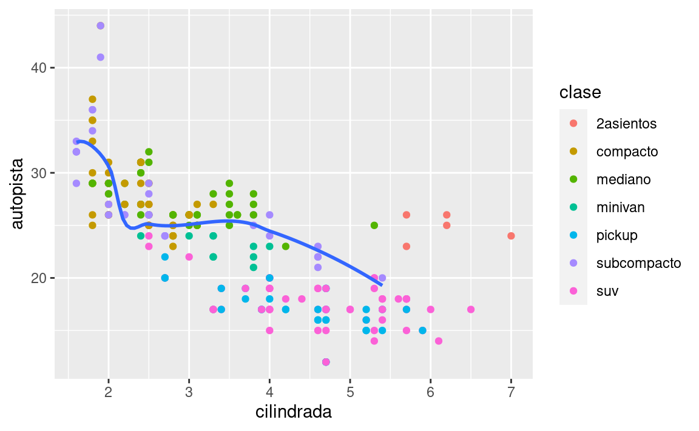
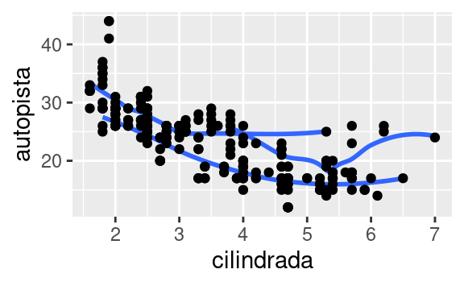

#> # A tibble: 234 × 11
#> fabricante modelo cilindrada anio cilindros transmision traccion ciudad
#> <chr> <chr> <dbl> <int> <int> <chr> <chr> <int>
#> 1 audi a4 1.8 1999 4 auto(l5) d 18
#> 2 audi a4 1.8 1999 4 manual(m5) d 21
#> 3 audi a4 2 2008 4 manual(m6) d 20
#> 4 audi a4 2 2008 4 auto(av) d 21
#> 5 audi a4 2.8 1999 6 auto(l5) d 16
#> 6 audi a4 2.8 1999 6 manual(m5) d 18
#> # ℹ 228 more rows
#> # ℹ 3 more variables: autopista <int>, combustible <chr>, clase <chr>3 Visualización de datos
3.1 Introducción
“Un simple gráfico ha brindado más información a la mente del analista de datos que cualquier otro dispositivo”. — John Tukey
En este capítulo aprenderás cómo visualizar tus datos usando el paquete ggplot2. De los muchos sistemas que posee R para hacer gráficos, ggplot2 es uno de los más elegantes y versátiles. Esto se debe a que ggplot2 implementa un sistema coherente para describir y construir gráficos, conocido como la gramática de gráficos. Con ggplot2 puedes hacer más cosas en menor tiempo, aprendiendo un único sistema y aplicándolo en diferentes ámbitos.
Si deseas obtener más información sobre los fundamentos teóricos de ggplot2 antes de comenzar, te recomendamos leer “La gramática de gráficos en capas”, http://vita.had.co.nz/papers/layered-grammar.pdf.
3.1.1 Prerrequisitos
Este capítulo se centra en ggplot2, uno de los paquetes principales del Tidyverse. Para acceder a sus funciones y las páginas de ayuda que utilizaremos en este capítulo, debes cargar el Tidyverse ejecutando este código:
Esa única línea de código carga el núcleo del Tidyverse, que está compuesto por los paquetes que usarás en casi todos tus análisis de datos. Al correr esta línea también verás cuáles funciones de tidyverse pueden tener conflicto con funciones de R base (o de otros paquetes que puedas haber cargado previamente).
Si ejecutas este código y recibes el mensaje “Error in library(tidyverse): there is no package called ‘tidyverse’” (no hay ningún paquete llamado ‘tidyverse’), primero deberás instalarlo y luego ejecutar library():
Solo es necesario que instales los paquetes una única vez; sin embargo, tendrás que cargarlos siempre que inicies una nueva sesión.
Cuando necesitemos especificar la procedencia de una función (o un conjunto de datos), usaremos el formato especial paquete::funcion(). Por ejemplo, ggplot2::ggplot() dice explícitamente que estamos usando la función ggplot() del paquete ggplot2.
Además del Tidyverse, es necesario que cargues el paquete datos, ya que en él están contenidas las versiones en español de los datos que utilizaremos en este capítulo:
3.2 Primeros pasos
Usemos nuestro primer gráfico para responder una pregunta: ¿los automóviles con motores grandes consumen más combustible que los automóviles con motores pequeños? Probablemente ya tengas una respuesta, pero trata de responder de forma precisa. ¿Cómo es la relación entre el tamaño del motor y la eficiencia del combustible? ¿Es positiva? ¿Es negativa? ¿Es lineal o no lineal?
3.2.1 El data frame millas
Puedes poner a prueba tu respuesta empleando el data frame millas que se encuentra en el paquete datos (datos::millas). Un data frame es una colección rectangular de variables (columnas) y observaciones (filas). El data frame millas contiene observaciones para 38 modelos de automóviles recopiladas por la Agencia de Protección Ambiental de los EE. UU.
Entre las variables de millas se encuentran:
cilindrada: tamaño del motor del automóvil, en litros.autopista: eficiencia del uso de combustible de un automóvil en carretera, en millas por galón. Al recorrer la misma distancia, un automóvil de baja eficiencia consume más combustible que un automóvil de alta eficiencia.
Para obtener más información sobre el data frame millas, abre su página de ayuda ejecutando ?millas.
3.2.2 Creando un gráfico con ggplot
Para graficar millas, ejecuta este código para poner cilindrada en el eje x y autopista en el eje y:

El gráfico muestra una relación negativa entre el tamaño del motor (cilindrada) y la eficiencia del combustible (autopista). En otras palabras, los vehículos con motores grandes usan más combustible. Este resultado, ¿confirma o refuta tu hipótesis acerca de la relación entre la eficiencia del combustible y el tamaño del motor?
Para comenzar un gráfico con ggplot2 se utiliza la función ggplot(). ggplot() crea un sistema de coordenadas al que puedes agregar capas. El primer argumento de ggplot() es el conjunto de datos que se utilizará en el gráfico. Si corres ggplot(data = millas), obtendrás un gráfico vacío. Como no es muy interesante, no vamos a mostrarlo aquí.
Para completar tu gráfico debes agregar una o más capas a ggplot(). La función geom_point() agrega una capa de puntos al gráfico, lo que crea un diagrama de dispersión (o scatterplot). ggplot2 incluye muchas funciones geom, cada una de las cuales agrega un tipo de capa diferente a un gráfico. Aprenderás muchas de ellas a lo largo de este capítulo.
Cada función geom en ggplot2 tiene un argumento de mapping. Este define cómo se “mapean” o se asignan las variables del conjunto de datos a propiedades visuales. El argumento de mapping siempre aparece emparejado con aes() y los argumentos x e y dentro de aes() especifican qué variables asignar a estos ejes. ggplot2 busca la variable asignada en el argumento data, en este caso, millas.
3.2.3 Una plantilla de gráficos
Convirtamos ahora este código en una plantilla reutilizable para hacer gráficos con ggplot2. Para hacer un gráfico, reemplaza las secciones entre corchetes en el siguiente código con un conjunto de datos, una función geom o una colección de mapeos.
El resto de este capítulo te mostrará cómo utilizar y adaptar esta plantilla para crear diferentes tipos de gráficos. Comenzaremos por el componente <MAPEOS>
3.2.4 Ejercicios
Ejecuta
ggplot(data = millas). ¿Qué observas?¿Cuántas filas hay en
millas? ¿Cuántas columnas?¿Qué describe la variable
traccion? Lee la ayuda de?millaspara encontrar la respuesta.Realiza un gráfico de dispersión de
autopistaversuscilindros.¿Qué sucede cuando haces un gráfico de dispersión (scatterplot) de
claseversustraccion? ¿Por qué no es útil este gráfico?
3.3 Mapeos estéticos
“El mayor valor de una imagen es cuando nos obliga a observar lo que no esperábamos ver”. — John Tukey
En el siguiente gráfico, un grupo de puntos (resaltados en rojo) parece quedar fuera de la tendencia lineal. Estos automóviles tienen un kilometraje mayor de lo que esperaríamos. ¿Cómo puedes explicar estos vehículos?
Supongamos que estos automóviles son híbridos. Una forma de probar esta hipótesis es observando la variable que indica la clase de cada automóvil. La variable clase del conjunto de datos de millas clasifica los autos en grupos como compacto, mediano y SUV. Si los puntos periféricos corresponden a automóviles híbridos, deberían estar clasificados como compactos o, tal vez, subcompactos (ten en cuenta que estos datos se recopilaron antes de que las camionetas híbridas y SUV se hicieran populares).
Puedes agregar una tercera variable, como clase, a un diagrama de dispersión bidimensional asignándolo a un parámetro estético. Un parámetro estético (o estética) es una propiedad visual de los objetos de un gráfico. Las estéticas incluye cosas como el tamaño, la forma o el color de tus puntos. Puedes mostrar un punto (como el siguiente) de diferentes maneras si cambias los valores de sus propiedades estéticas. Como ya usamos la palabra “valor” para describir los datos, usemos la palabra “nivel” para describir las propiedades estéticas. Aquí cambiamos los niveles del tamaño, la forma y el color de un punto para que el punto sea pequeño, triangular o azul:

El mapeo entre las propiedades estéticas de tu gráfico y las variables de tu dataset te permite comunicar información sobre tus datos. Por ejemplo, puedes asignar los colores de los puntos de acuerdo a la variable clase para indicar a qué clase pertenece cada automóvil.
(Si prefieres el inglés británico, como Hadley, puedes usar colour en lugar de color).
Para mapear (o asignar) una estética a una variable, debes asociar el nombre de la estética al de la variable dentro de aes(). ggplot2 asignará automáticamente un nivel único de la estética (en este ejemplo, un color) a cada valor único de la variable. Este proceso es conocido como escalamiento (scaling). ggplot2 acompañará el gráfico con una leyenda que explica qué niveles corresponden a qué valores.
Los colores revelan que muchos de los puntos inusuales son automóviles de dos asientos. ¡Estos no parecen híbridos y son, de hecho, automóviles deportivos! Los automóviles deportivos tienen motores grandes, como las camionetas todo terreno o pickups, pero su cuerpo es pequeño, como los automóviles medianos y compactos, lo que mejora su consumo de gasolina. En retrospectiva, es poco probable que estos automóviles sean híbridos, ya que tienen motores grandes.
En el ejemplo anterior asignamos la variable clase a la estética de color, pero podríamos haberla asignado a la estética del tamaño del mismo modo. En este caso, el tamaño exacto de cada punto revelaría a qué clase pertenece. Recibimos aquí una advertencia (warning), porque mapear una variable no ordenada (clase) a una estética ordenada (size) no es una buena idea.
También podríamos haber asignado la variable clase a la estética alpha, que controla la transparencia de los puntos, o a la estética shape que controla la forma (shape) de los puntos.
¿Qué pasó con los SUV? ggplot2 solo puede usar seis formas a la vez. De forma predeterminada, los grupos adicionales no se grafican cuando se emplea la estética de la forma (shape).
Para cada estética utilizamos aes() para asociar su nombre con la variable seleccionada para graficar. La función aes() reúne cada una de las asignaciones estéticas utilizadas por una capa y las pasa al argumento de mapeo de la capa. La sintaxis resalta una visión útil sobre x e y: las ubicaciones de x e y de un punto son en sí mismas también estéticas, es decir propiedades visuales que se puede asignar a las variables para mostrar información sobre los datos.
Una vez que asignas (o “mapeas”) una estética, ggplot2 se ocupa del resto. El paquete selecciona una escala razonable para usar con la estética elegida y construye una leyenda que explica la relación entre niveles y valores. Para la estética x e y, ggplot2 no crea una leyenda, pero sí una línea que delimita el eje con sus marcas de graduación y una etiqueta. La línea del eje actúa como una leyenda; explica el mapeo entre ubicaciones y valores.
También puedes fijar las propiedades estéticas de tu geom manualmente. Por ejemplo, podemos hacer que todos los puntos del gráfico sean azules:
Aquí, el color no transmite información sobre una variable, sino que cambia la apariencia del gráfico. Para establecer una estética de forma manual, debes usar el nombre de la estética como un argumento de la función geom; es decir, va fuera de aes(). Tendrás que elegir un nivel que tenga sentido para esa estética:
El nombre de un color como cadena de caracteres.
El tamaño de un punto en mm.
La forma de un punto como un número, tal como se muestra en la Figura @ref(fig:shapes).
color y fill (relleno). Las formas vacías (0–14) tienen un borde determinado por color; las formas sólidas (15–18) están rellenas con color; las formas rellenas (21–24) tienen un borde de color y están rellenas por fill.3.3.1 Ejercicios
- ¿Qué no va bien en este código? ¿Por qué hay puntos que no son azules?
::: {.cell layout-align=“center” hash=‘03-visualize_cache/html/unnamed-chunk-13_a73c406cee670f9d08f0963205a22f8f’} ::: {.cell-output-display} ::: :::
¿Qué variables en
millasson categóricas? ¿Qué variables son continuas? (Pista: escribe?millaspara leer la documentación de ayuda para este conjunto de datos). ¿Cómo puedes ver esta información cuando ejecutasmillas?Asigna una variable continua a
color,size, yshape. ¿Cómo se comportan estas estéticas de manera diferente para variables categóricas y variables continuas?¿Qué ocurre si asignas o mapeas la misma variable a múltiples estéticas?
¿Qué hace la estética
stroke? ¿Con qué formas trabaja? (Pista: consulta?geom_point)¿Qué ocurre si se asigna o mapea una estética a algo diferente del nombre de una variable, como
aes(color = cilindrada < 5)?
3.4 Problemas comunes
A medida que empieces a escribir código en R, lo más probable es que te encuentres con problemas. No te preocupes, es lo más común. Hemos estado escribiendo código en R durante años, ¡y todos los días seguimos escribiendo código que no funciona!
Comienza comparando cuidadosamente el código que estás ejecutando con el código en este libro. R es extremadamente exigente y un carácter fuera de lugar puede marcar la diferencia. Asegúrate de que cada ( coincida con un ) y cada " esté emparejado con otro". Algunas veces ejecutarás el código y no pasará nada. Comprueba la parte izquierda de tu consola: si es un +, significa que R no cree que hayas escrito una expresión completa y está esperando que la termines. En este caso, normalmente es más fácil comenzar de nuevo desde cero presionando ESCAPE (la tecla esc) para cancelar el procesamiento del comando actual.
Un problema común al crear gráficos con ggplot2 es colocar el + en el lugar equivocado: debe ubicarse al final de la línea, no al inicio. En otras palabras, asegúrate de no haber escrito accidentalmente un código como este:
ggplot(data = millas)
+ geom_point(mapping = aes(x = cilindrada, y = autopista))Si esto no resuelve el problema, prueba con la ayuda. Puedes obtener ayuda sobre cualquier función de R ejecutando ?nombre_de_la_funcion en la consola o seleccionando el nombre de la función y presionando F1 en RStudio. No te preocupes si la ayuda no te parece tan útil, trata entonces de saltar a los ejemplos y buscar un pedazo de código que coincida con lo que intentas hacer.
Si eso no ayuda, lee cuidadosamente el mensaje de error. ¡A veces la respuesta estará oculta allí! Sin embargo, cuando recién comienzas en R, puede que la respuesta esté en el mensaje de error, pero aún no sabes cómo entenderlo. Otra gran herramienta es Google: intenta buscar allí el mensaje de error, ya que es probable que otra persona haya tenido el mismo problema y haya obtenido ayuda en línea.
3.5 Separar en facetas
Una forma de agregar variables adicionales es con las estéticas. Otra forma particularmente útil para las variables categóricas consiste en dividir el gráfico en facetas, es decir, sub-gráficos que muestran cada uno un subconjunto de los datos.
Para separar en facetas un gráfico según una sola variable, utiliza facet_wrap() (del inglés envolver una faceta). El primer argumento de facet_wrap() debería ser una fórmula creada con ~ seguida del nombre de una de las variable (aquí “fórmula” es el nombre de un tipo de estructura en R, no un sinónimo de “ecuación”). La variable que uses en facet_wrap() debe ser categórica.
Para separar en facetas un gráfico según las combinaciones de dos variables, agrega facet_grid() a tu código del gráfico (grid quiere decir cuadrícula en inglés). El primer argumento de facet_grid() también corresponde a una fórmula. Esta vez, la fórmula debe contener dos nombres de variables separados por un ~.
Si prefieres no separar en facetas las filas o columnas, remplaza por un . el nombre de alguna de las variables, por ejemplo + facet_grid(. ~ cilindros).
3.5.1 Ejercicios
¿Qué ocurre si intentas separar en facetas una variable continua?
¿Qué significan las celdas vacías que aparecen en el gráfico generado usando
facet_grid(traccion ~ cilindros)? ¿Cómo se relacionan con este gráfico?¿Qué grafica el siguiente código? ¿Qué hace
.?Mira de nuevo el primer gráfico en facetas presentado en esta sección:
¿Cuáles son las ventajas de separar en facetas en lugar de aplicar una estética de color? ¿Cuáles son las desventajas? ¿Cómo cambiaría este balance si tuvieras un conjunto de datos más grande?
Lee
?facet_wrap. ¿Qué hacenrow? ¿Qué hacencol? ¿Qué otras opciones controlan el diseño de los paneles individuales? ¿Por quéfacet_grid()no tiene argumentosnrowyncol?Cuando usas
facet_grid(), generalmente deberías poner la variable con un mayor número de niveles únicos en las columnas. ¿Por qué?
3.6 Objetos geométricos
¿En qué sentido estos dos gráficos son similares?
Ambos gráficos contienen las mismas variables x e y, y ambos describen los mismos datos. Pero los gráficos no son idénticos. Cada uno utiliza un objeto visual diferente para representar los datos. En la sintaxis de ggplot2, decimos que usan diferentes geoms.
Un geom es el objeto geométrico usado para representar datos de forma gráfica. La gente a menudo llama a los gráficos por el tipo de geom que utiliza. Por ejemplo, los diagramas de barras usan geoms de barra (bar), los diagramas de líneas usan geoms de línea (line), los diagramas de caja usan geoms de diagrama de caja (boxplot), y así sucesivamente. En inglés, los diagramas de puntos (llamados scatterplots) rompen la tendencia; ellos usan geom de punto (o point). Como vemos arriba, puedes usar diferentes geoms para graficar los mismos datos. La gráfica de la izquierda usa el geom de punto (geom_point()), y la gráfica de la derecha usa el geom suavizado (geom_smooth()), una línea suavizada ajustada a los datos.
Para cambiar el geom de tu gráfico, modifica la función geom que acompaña a ggplot(). Por ejemplo, para hacer los gráficos que se muestran arriba, puedes usar este código:
Cada función geom en ggplot2 toma un argumento de mapping. Sin embargo, no todas las estéticas funcionan con todos los geom. Puedes establecer la forma para un punto, pero no puedes establecer la “forma” de una línea. Por otro lado, para una línea podrías elegir el tipo de línea (linetype). geom_smooth() dibujará una línea diferente, con un tipo de línea distinto (linetype), para cada valor único de la variable que asignes al tipo de línea (linetype).
Aquí geom_smooth() separa los automóviles en tres líneas en función de su valor de traccion, que describe el tipo de transmisión de un automóvil. Una línea describe todos los puntos con un valor de 4, otra línea los de valor d, y una tercera línea describe los puntos con un valor t. Aquí, 4 significa tracción en las cuatro ruedas, d tracción delantera y t tracción trasera.
Si esto suena extraño, podemos hacerlo más claro al superponer las líneas sobre los datos brutos y luego colorear todo según traccion.

¡Observa que generamos un gráfico que contiene dos geoms! Si esto te emociona, abróchate el cinturón. En la siguiente sección aprenderemos cómo colocar múltiples geoms en el mismo gráfico.
ggplot2 proporciona más de 40 geoms y los paquetes de extensión proporcionan aún más (consulta https://exts.ggplot2.tidyverse.org/gallery/ para obtener una muestra). La mejor forma de obtener un panorama completo sobre las posibilidades que brinda ggplot2 es consultando la hoja de referencia (o cheatsheet), que puedes encontrar en https://rstudio.com/resources/cheatsheets/ (en la parte baja de la página encontrarás la versión en español). Para obtener más información sobre un tipo dado de geoms, usa la ayuda: ?geom_smooth.
Muchos geoms, como geom_smooth(), usan un único objeto geométrico para mostrar múltiples filas de datos. Con estos geoms, puedes asignar la estética de group (grupo) a una variable categórica para graficar múltiples objetos. ggplot2 representará un objeto distinto por cada valor único de la variable de agrupamiento. En la práctica, ggplot2 agrupará automáticamente los datos para estos geoms siempre que se asigne una estética a una variable discreta (como en el ejemplo del tipo de línea o linetype). Es conveniente confiar en esta característica porque la estética del grupo en sí misma no agrega una leyenda o características distintivas a los geoms.
Para mostrar múltiples geoms en el mismo gráfico, agrega varias funciones geom a ggplot():
Esto introduce, sin embargo, cierta duplicación en nuestro código. Imagina que deseas cambiar el eje y para mostrar cilindrada en lugar de autopista. Necesitarías cambiar la variable en dos lugares y podrías olvidarte de actualizar uno. Puedes evitar este tipo de repetición pasando un conjunto de mapeos a ggplot(). ggplot2 tratará estos mapeos como mapeos globales que se aplican a cada geom en el gráfico. En otras palabras, este código producirá la misma gráfica que el código anterior:
Si colocas mapeos en una función geom, ggplot2 los tratará como mapeos locales para la capa. Estas asignaciones serán usadas para extender o sobrescribir los mapeos globales solo para esa capa. Esto permite mostrar diferentes estéticas en diferentes capas.
La misma idea se puede emplear para especificar distintos conjuntos de datos (data) para cada capa. En el siguiente caso, nuestra línea suave muestra solo un subconjunto del conjunto de datos de millas: los autos subcompactos. El argumento local de datos en geom_smooth() anula el argumento de datos globales en ggplot() solo para esa capa.

(Aprenderás cómo funciona filter() en el próximo capítulo: por ahora, solo recuerda que este comando selecciona los automóviles subcompactos).
3.6.1 Ejercicios
¿Qué geom usarías para generar un gráfico de líneas? ¿Y para un diagrama de caja? ¿Y para un histograma? ¿Y para un gráfico de área?
Ejecuta este código en tu mente y predice cómo se verá el output. Luego, ejecuta el código en R y verifica tus predicciones.
¿Qué muestra
show.legend = FALSE? ¿Qué pasa si lo quitas? ¿Por qué crees que lo utilizamos antes en el capítulo?¿Qué hace el argumento
seengeom_smooth()?¿Se verán distintos estos gráficos? ¿Por qué sí o por qué no?
Recrea el código R necesario para generar los siguientes gráficos:


3.7 Transformaciones estadísticas
A continuación, echemos un vistazo a un gráfico de barras. Los gráficos de barras parecen simples, pero son interesantes porque revelan algo sutil sobre los gráficos. Considera un gráfico de barras básico, como uno realizado con geom_bar(). El siguiente gráfico muestra la cantidad total de diamantes en el conjunto de datos diamantes, agrupados por la variable corte. El conjunto de datos diamantes se encuentra en el paquete datos y contiene información sobre ~ 54000 diamantes, incluido el precio, el quilate, el color, la claridad y el corte de cada uno. El gráfico muestra que hay más diamantes disponibles con cortes de alta calidad que con cortes de baja calidad.

En el eje x, el gráfico muestra corte, una variable de diamantes. En el eje y muestra el recuento (count), ¡pero el recuento no es una variable en diamantes! ¿De dónde viene? Muchos gráficos, como los diagramas de dispersión (scatterplots), grafican los valores brutos de un conjunto de datos. Otros gráficos, como los de barras, calculan nuevos valores para presentar:
Los gráficos de barras, los histogramas y los polígonos de frecuencia almacenan los datos y luego grafican los conteos por contenedores (bins), es decir, el número de puntos que caen en cada contenedor.
Los gráficos de líneas suavizadas (smoothers) ajustan un modelo a los datos y luego grafican las predicciones del modelo.
Los diagramas de caja (boxplots) calculan un resumen robusto de la distribución y luego muestran una caja con formato especial.
El algoritmo utilizado para calcular nuevos valores para un gráfico se llama stat, abreviatura en inglés de transformación estadística (statistical transformation). La siguiente figura describe cómo funciona este proceso con geom_bar().

Puedes aprender acerca de qué stat usa cada geom inspeccionando el valor predeterminado para el argumento stat. Por ejemplo, ?geom_bar muestra que el valor predeterminado para stat es “count”, lo que significa que geom_bar() usa stat_count(). stat_count() está documentado en la misma página que geom_bar() y si te desplazas hacia abajo puedes encontrar una sección llamada “Computed variables” (Variables calculadas). Ahí se describe cómo calcula dos nuevas variables: count y prop.
Por lo general, puedes usar geoms y estadísticas de forma intercambiable. Por ejemplo, puedes volver a crear la gráfica anterior usando stat_count() en lugar de geom_bar():
Esto funciona porque cada geom tiene una estadística predeterminada y cada estadística tiene un geom predeterminado. Esto significa que generalmente puedes usar geoms sin preocuparte por la transformación estadística subyacente.
Hay tres razones por las que podrías necesitar usar una estadística explícitamente:
Es posible que desees anular la estadística predeterminada. En el siguiente código, cambiamos en
geom_bar()la estadística recuento (“count”, el valor predeterminado) a identidad (“identity”). Esto nos permite asignar la altura de las barras a los valores brutos de una variable \(y\). Desafortunadamente, cuando las personas hablan de gráficos de barras de manera informal, podrían estar refiriéndose a este tipo de gráfico de barras, en el que la altura de la barra ya está presente en los datos, o bien, al gráfico de barras anterior, en el que la altura de la barra se determina contando filas.(No te preocupes si nunca has visto
<-otribble(). Puede que seas capaz de adivinar su significado por el contexto y ¡pronto aprenderás qué es lo que hacen exactamente!)Es posible que desees anular el mapeo predeterminado de las variables transformadas a las estéticas. Por ejemplo, es posible que desees mostrar un gráfico de barras de proporciones, en lugar de un recuento:
Para encontrar las variables calculadas por stat, busca la sección de ayuda titulada “Compute Variables”.
Es posible que desees resaltar la transformación estadística en tu código. Por ejemplo, puedes usar
stat_summary(), que resume los valores de y para cada valor único de x, para así resaltar el resumen que se está computando:
ggplot2 proporciona más de 20 transformaciones estadísticas para que uses. Cada stat es una función, por lo que puedes obtener ayuda de la manera habitual, por ejemplo: ?stat_bin. Para ver una lista completa de transformaciones estadísticas disponibles para ggplot2, consulta la hoja de referencia.
3.7.1 Ejercicios
¿Cuál es el geom predeterminado asociado con
stat_summary()? ¿Cómo podrías reescribir el gráfico anterior para usar esa función geom en lugar de la función stat?¿Qué hace
geom_col()? ¿En qué se diferencia degeom_bar()?La mayoría de los geoms y las transformaciones estadísticas vienen en pares que casi siempre se usan en conjunto. Lee la documentación y haz una lista de todos los pares. ¿Qué tienen en común?
¿Qué variables calcula
stat_smooth()? ¿Qué parámetros controlan su comportamiento?En nuestro gráfico de barras de proporción necesitamos establecer
group = 1. ¿Por qué? En otras palabras, ¿cuál es el problema con estos dos gráficos?
3.8 Ajustes de posición
Hay una pieza más de magia asociada con los gráficos de barras. Puedes colorear un gráfico de barras usando tanto la estética de color como la más útil fill (relleno):
Mira lo que sucede si asignas la estética de relleno (fill) a otra variable, como claridad: las barras se apilan automáticamente. Cada rectángulo de color representa una combinación de corte y claridad.
El apilamiento se realiza automáticamente mediante el ajuste de posición especificado por el argumento position. Si no deseas un gráfico de barras apiladas ("stack"), puedes usar una de las otras tres opciones: "identity", "dodge" o "fill".
position = "identity"colocará cada objeto exactamente donde cae en el contexto del gráfico. Esto no es muy útil al momento de graficar barras, ya que las superpone. Para ver esa superposición, debemos hacer que las barras sean ligeramente transparentes configurando elalphaa un valor pequeño, o completamente transparente al establecerfill = NA.::: {.cell hash=‘03-visualize_cache/html/unnamed-chunk-40_73c447b0b3ef5230bfe67a0f1501f530’} ::: {.cell-output-display} :::
::: {.cell-output-display} ::: :::
El ajuste de position = identity es más útil para geoms 2D, como puntos, donde es la opción predeterminada.
position = "fill"funciona como el apilamiento deposition = "stack", pero hace que cada conjunto de barras apiladas tenga la misma altura. Esto hace que sea más fácil comparar proporciones entre grupos.::: {.cell layout-align=“center” hash=‘03-visualize_cache/html/unnamed-chunk-41_c20bed99d518bd2755571d00a8e1dd60’} ::: {.cell-output-display} ::: :::
position = "dodge"coloca los objetos superpuestos uno al lado del otro. Esto hace que sea más fácil comparar valores individuales.::: {.cell layout-align=“center” hash=‘03-visualize_cache/html/unnamed-chunk-42_d4fe828b5c8df360221fe7f6f8afa758’} ::: {.cell-output-display} ::: :::
Hay otro tipo de ajuste que no es útil para gráficos de barras, pero que puede ser muy útil para diagramas de dispersión. Recuerda nuestro primer diagrama de dispersión. ¿Notaste que mostraba solo 126 puntos, a pesar de que hay 234 observaciones en el conjunto de datos?

Los valores de las variables autopista y cilindrada se redondean de modo que los puntos aparecen en una cuadrícula y muchos se superponen entre sí. Este problema se conoce como solapamiento (overplotting). Esta disposición hace que sea difícil ver dónde está la masa de datos. ¿Los puntos de datos se distribuyen equitativamente a lo largo de la gráfica, o hay una combinación especial de autopista y cilindrada que contiene 109 valores?
Puedes evitar esto estableciendo el ajuste de posición en “jitter”. position = "jitter" agrega una pequeña cantidad de ruido aleatorio a cada punto. Esto dispersa los puntos, ya que es poco probable que dos puntos reciban la misma cantidad de ruido aleatorio.
Agregar aleatoriedad a los puntos puede parecer una forma extraña de mejorar tu gráfico. Si bien hace que sea menos preciso a escalas pequeñas, lo hace ser más revelador a gran escala. Como esta es una operación tan útil, ggplot2 incluye una abreviatura de geom_point(position = "jitter"): geom_jitter().
Para obtener más información sobre ajustes de posición, busca la página de ayuda asociada con cada ajuste: ?position_dodge, ?position_fill, ?position_identity, ?position_jitter y ?position_stack.
3.8.1 Ejercicios
¿Cuál es el problema con este gráfico? ¿Cómo podrías mejorarlo?
¿Qué parámetros de
geom_jitter()controlan la cantidad de ruido?Compara y contrasta
geom_jitter()congeom_count()¿Cuál es el ajuste de posición predeterminado de
geom_boxplot()? Crea una visualización del conjunto de datos demillasque lo demuestre.
3.9 Sistemas de coordenadas
Los sistemas de coordenadas son probablemente la parte más complicada de ggplot2. El sistema predeterminado es el sistema de coordenadas cartesianas, donde las posiciones x e y actúan independientemente para determinar la ubicación de cada punto. Hay varios otros sistemas de coordenadas que ocasionalmente son útiles.
coord_flip()cambia los ejes x e y. Esto es útil, por ejemplo, si quieres diagramas de caja horizontales. También es útil para etiquetas largas: es difícil ajustarlas sin que se superpongan en el eje x.::: {.cell hash=‘03-visualize_cache/html/unnamed-chunk-46_dc4b189cda1d90a550e5519a9d8ee9ec’} ::: {.cell-output-display} :::
::: {.cell-output-display}
 ::: :::
::: :::coord_quickmap()establece correctamente la relación de aspecto para los mapas. Esto es muy importante si gráficas datos espaciales con ggplot2 (tema para el que, desafortunadamente, no contamos con espacio para desarrollar en este libro).::: {.cell hash=‘03-visualize_cache/html/unnamed-chunk-47_cb0f4389583136d60a729b24a138dbf4’} ::: {.cell-output-display} :::
::: {.cell-output-display}
 ::: :::
::: :::coord_polar()usa coordenadas polares. Las coordenadas polares revelan una conexión interesante entre un gráfico de barras y un gráfico de Coxcomb.::: {.cell hash=‘03-visualize_cache/html/unnamed-chunk-48_d5626e92677704336a3fd414d6fe8b9e’} ::: {.cell-output-display} :::
::: {.cell-output-display} ::: :::
3.9.1 Ejercicios
Convierte un gráfico de barras apiladas en un gráfico circular usando
coord_polar().¿Qué hace
labs()? Lee la documentación.¿Cuál es la diferencia entre
coord_quickmap()ycoord_map()?¿Qué te dice la gráfica siguiente sobre la relación entre
ciudadyautopista? ¿Por qué escoord_fixed()importante? ¿Qué hacegeom_abline()?
3.10 La gramática de gráficos en capas
En las secciones anteriores aprendiste mucho más que solo hacer diagramas de dispersión, gráficos de barras y diagramas de caja. Aprendiste una base que se puede usar para hacer cualquier tipo de gráfico con ggplot2. Para ver esto, agreguemos ajustes de posición, transformaciones estadísticas, sistemas de coordenadas y facetas a nuestra plantilla de código:
ggplot(data = <DATOS>) +
<GEOM_FUNCIÓN>(
mapping = aes(<MAPEOS>),
stat = <ESTADÍSTICAS>,
position = <POSICIÓN>
) +
<FUNCIÓN_COORDENADAS> +
<FUNCIÓN_FACETAS>
Nuestra nueva plantilla tiene siete parámetros que se corresponden con las palabras entre corchetes que aparecen en la plantilla. En la práctica, rara vez necesitas proporcionar los siete parámetros para hacer un gráfico porque ggplot2 proporcionará valores predeterminados útiles para todos, excepto para los datos, el mapeo y la función geom.
Los siete parámetros en la plantilla componen la gramática de los gráficos, un sistema formal de construcción de gráficos. La gramática de los gráficos se basa en la idea de que puedes describir de manera única cualquier gráfico como una combinación de un conjunto de datos, un geom, un conjunto de mapeos, una estadística, un ajuste de posición, un sistema de coordenadas y un esquema de facetado.
Para ver cómo funciona esto, considera cómo podrías construir un gráfico básico desde cero: podrías comenzar con un conjunto de datos y luego transformarlo en la información que deseas mostrar (con un stat).

A continuación, podrías elegir un objeto geométrico para representar cada observación en los datos transformados. Luego, podrías usar las propiedades estéticas de los geoms para representar variables de los datos. Asignarías los valores de cada variable a los niveles de una estética.

Posteriormente, podrías seleccionar un sistema de coordenadas para colocar los geoms. Podrías utilizar la ubicación de los objetos (que es en sí misma una propiedad estética) para mostrar los valores de las variables x e y. Ya en este punto podrías tener un gráfico completo, pero también podrías ajustar aún más las posiciones de los geoms dentro del sistema de coordenadas (un ajuste de posición) o dividir el gráfico en facetas. También podrías extender el gráfico agregando una o más capas adicionales, donde cada capa adicional usaría un conjunto de datos, un geom, un conjunto de mapeos, una estadística y un ajuste de posición.

Puedes usar este método para construir cualquier gráfico que imagines. En otras palabras, puedes usar la plantilla de código que aprendiste en este capítulo para construir cientos de miles de gráficos únicos.